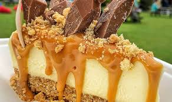

Desi cuisine's most commonly used spices include cumin, coriander, turmeric, and chilli powder.
Other
ingredients commonly used in Desi cuisine include lentils, rice, and a variety of vegetables such as
eggplant, okra, and spinach.

Fast food is food quickly prepared and served, often at chain restaurants and typically associated with less expensive and less nutritious items like hamburgers, french fries, and soft drinks.

seafood encompasses all commercially obtained freshwater and saltwater fish, molluscan shellfish, and crustaceans. Molluscan shellfish (or mollusks) and crustaceans are both commonly referred to as shellfish.

Desserts can be defined as a usually sweeter course that concludes a meal. This definition includes a range of courses ranging from fruits or dried nuts to multi-ingredient cakes and pies. Many cultures have different variations of dessert..